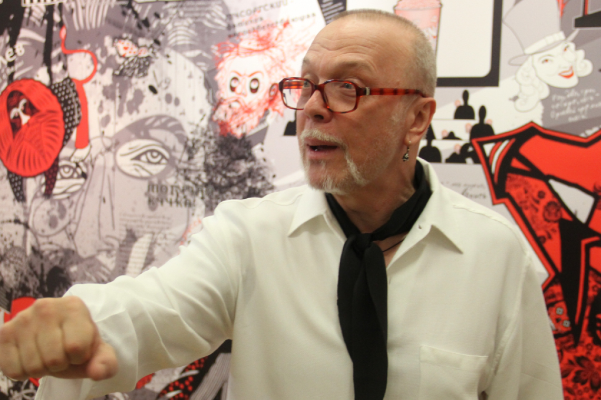
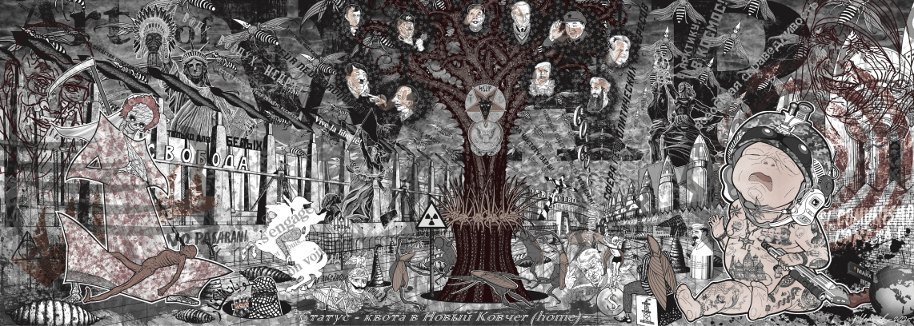
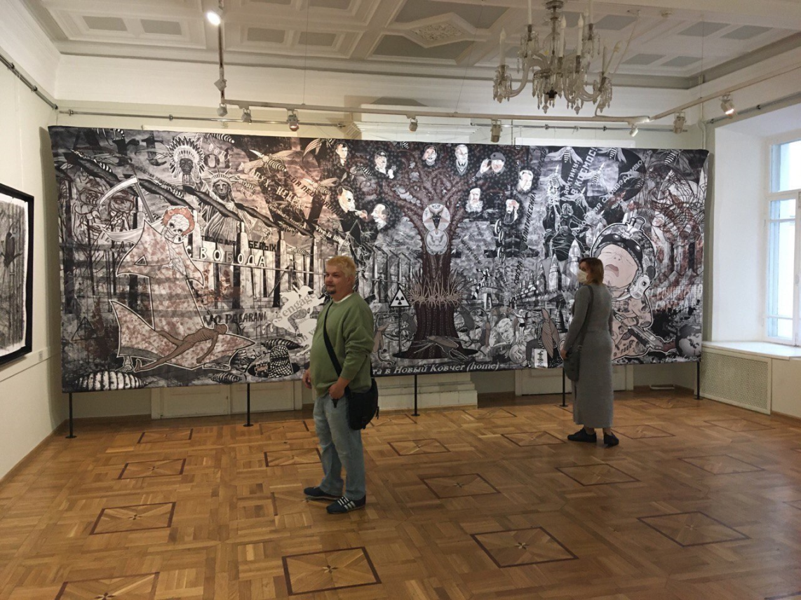
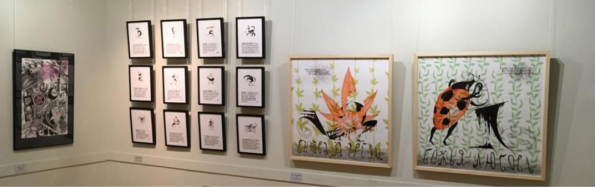
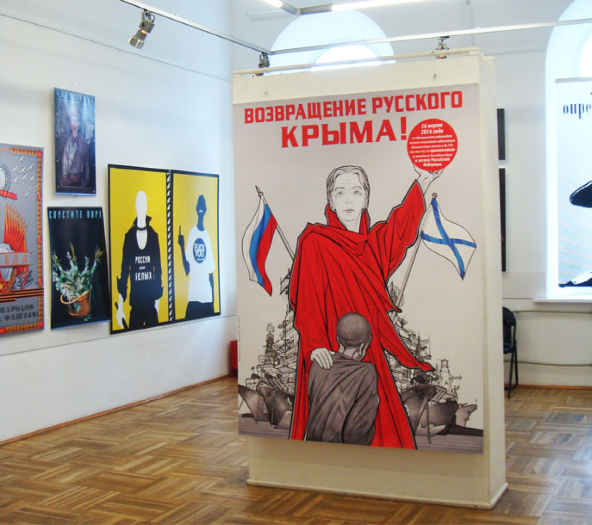
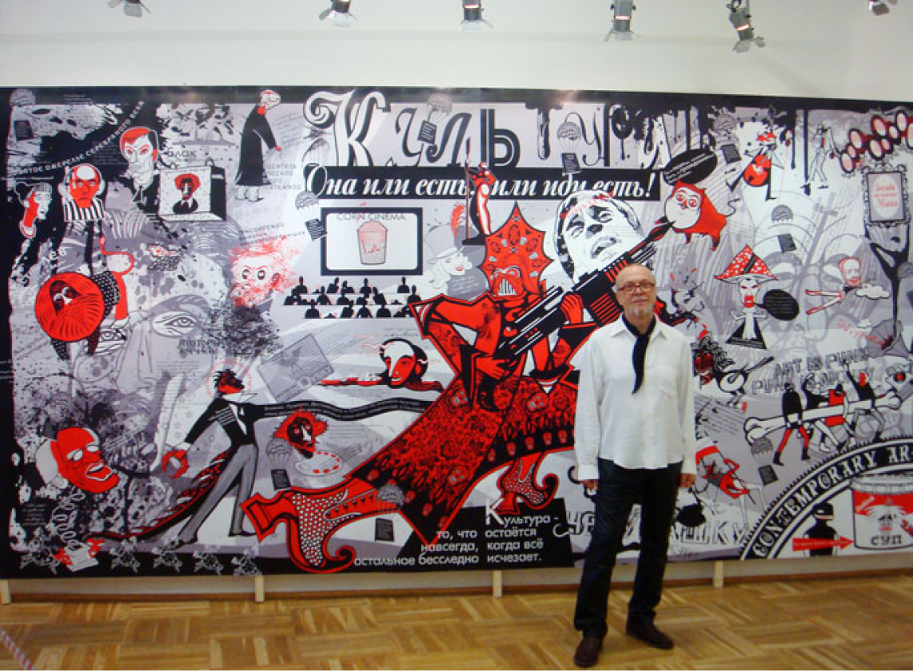

сми
«Комсомольская правда»
Выставка Василия Чекашова «ВРЕМЯ Ч»
Художник изучает природу агрессии человека — жестокость, упоение садизмом, тягу к истреблению и разрушению. Вселенская тревога, исторические вехи трагедий, технологии войн, мистические коды масонских лож в его произведениях становятся эдаким предчувствием третьей мировой. Не случайно в работах используются английские, японские, немецкие, итальянские тексты, а также на идише.

Главное полотно выставки — панно ART of WAR. В этом произведении свыше 40 персонажей
и образов военно-диктаторских трендов XX века. На главном месте — «древо дьявола», на котором
в плодах-коконах Геббельс, Муссолини, террорист № 1 бен Ладен, «демон Хиросимы и Нагасаки» президент
США Трумэн. Здесь и рыдающий младенец в стигматах многострадального наследия русского народа
с оружием от Smit and Wesson Magnum 500, и Смерть, кормящая грудью старца, и забинтованная Венера
Боттичелли, и даже статуя Свободы со скальпом индейца вместо факела в вытянутой руке… Весь этот хаос
вперемешку с лозунгами «Миру — мир», «Свобода-равенство-братство» суммируется в общий кошмар —
Апокалипсис. Чекашов закончил это произведение в начале января 2022 года. К сожалению, оно оказалось
пророческим.
- ГДЕ: Московский союз художников, м. «Китай-город», Старосадский пер., 5
- КОГДА: с 18 до 23 сентября
- Вход свободный.
kp.ru
«Комсомольская правда»
В Вятку привезли кресло из человеческой кожи
Сам мастер утверждает, что хотел «щелкнуть посетителей по носу». К определенному жанру он свои работы не относит, называя свои плакаты «граффектами», а живописные полотна «изостеризмами». Чекашов провел для вятских коллег небольшую экскурсию и попытался объяснить, что к чему.
Надо сказать, что Василий Чекашов был главным художником «Комсомолки» с 1994 по 1997 год. И даже придумал тот самый знаменитый логотип - «правДА!». Но бывших комсомольцев не бывает. И потому по приезде в Киров Чекашов первым делом позвонил в нашу редакцию.
...Энергичный мужчина с фигурно выстриженной бородкой и серьгой в ухе сразу провел меня в черную комнату, стены которой украшены изображением плакальщиц. Перед зрителями предстает большой экран, где в очень натуральном виде показывается, как совершается медицинский аборт. Одновременно с этим из колонок на 10 языках доносится слово «мама».
- Инсталляция называется «Родить нельзя убить», - отмечает Василий Чекашов. - Название намерено написано без знаков препинания. Следуя словам Антона Чехова: «Чтобы человек стал лучше, нужно показать, каков он есть», я решился на такой шаг.
Есть на выставке и зал дорогих работ. Но они не продаются. Живописец отдал каждой из них по четыре месяца, работая каждый день по 12 часов. Мелкие мазки достаточно реалистично обрисовывают предметы и передают их фактуру. Так, например, выписана работа «Мобильный за миллион евро».
- Этим работам я отдал много времени, - поделился Чекашов. - Картины эти не для интерьера - для коллекции.
В финале выставочной анфилады - видеоперфоманс, посвященный бомжам. Автор, проходя мимо раскрытого чемодана с ненужными вещами, заботливо кладет внутрь новый мусор из кармана. На заднем плане - пропущенное через фильтры видео бомжей, а рядом - забинтованные змея, акула и бык. Фигуры животных лежат безжизненно на полу. Над ними на подиуме возвышается кожаное кресло, как утверждает автор, из кожи человека.
- А вы поверьте, что это действительно так! Вот и человек лежит, которого пришлось ободрать. Задумайтесь, к чему все это? Музей - это отличное место, чтобы подумать о главном, - улыбнулся и закончил мини-экскурсию Василий Чекашов. Сверкая своей сережкой он отправился через залы на лекцию, которую уже ожидали будущие вятские художники.
kp.ru
27 апреля, 2013
«Комсомольская правда»
«Тротиловый эквивалент» плаката
Логотип «Комсомольская правДА!» в нашем еженедельнике - это его работа. Надо было сохранить в заголовке старый шрифт (история!) и в то же время умудриться очень корректно обозначить верность газеты традициям правды в новой политической эпохе. Это внезапное коротенькое «ДА!» - как зеленый побег, проросший из старого накатанного рельса.
Только что Василий издал книгу, в которой подытожил 30 лет своей работы. Критики называют его родоначальником нового направления - плакат-провокация и плакат-притча.
Кистью, пером или фотокамерой Чекашов выжигает раковые опухоли нашего времени - коррупцию, наркоманию, СПИД, алкоголизм, терроризм, проституцию, а также множество других социальных болячек. Человека, который давно привык ко всему этому, трудно уже пронять многословным морализаторством. Чекашов делает свои плакаты так, чтобы они при минимуме изобразительных средств и образов с максимальной силой били по мозгам. Эстеты наверняка испытают шок от некоторых «вульгарных» рисунков - и попадутся в тонко устроенную ловушку: сквозь нарочитую грязь или выспреннюю подделку мысль рвется к чистому и настоящему.
Чекашов по-разному добивается нужного «тротилового эквивалента» своего плаката - он или с ходу догола обнажает идею (окровавленные на чеченской войне бинты, к которым присосались зеленые черви долларов), или же хитроумно прячет ее в обманчиво бессмысленной пряже линий, среди четко выверенного беспорядка деталей (русские мозги на экспорт лежат в стружках ящика).
ЛИЧНОЕ ДЕЛО
Василий Николаевич ЧЕКАШОВ, заслуженный художник России. Родился 18 апреля 1958 года в
Магнитогорске. После окончания художественно-графического факультета Магнитогорского пединститута
много лет работает в различных жанрах: плакат, монументальная и станковая живопись, сграффито
(цветные цементы), дизайн интерьеров, графический дизайн, книжная иллюстрация, постановочная
фотография. Лауреат отечественных и зарубежных конкурсов. Два десятка персональных выставок: Россия,
Австрия, Венгрия, Германия, Швейцария. Работы художника находятся в государственных музеях и частных
коллекциях. Награжден орденом «Знак Почета».
ГДЕ УВИДЕТЬ
Плакаты Василия Чекашова
Выставочный зал Московского союза художников (Старосадский пер., 5.) 3 - 14 ноября
Цена билета: 10 руб
В. Баранец kp.ru
2 ноября, 2005
ИЗ КАТАЛОГА ВЫСТАВКИ
«ВРЕМЯ Ч» — БРЕМЯ ЧЕКАШОВА
«ВРЕМЯ Ч» — бремя Чекашова Настоящий проект Василия Чекашова «Время Ч»- естественное продолжение коронной темы автора, поиск ответа на вопрос: кто ты, человек? Теперь это не просто изобразительная диффамация антропоцентризма, а исследование физиологических и психических мотиваций людей, их генного перерождения, в эпицентре которого нарастающая «деконструкция ДНК». Помимо внутренних катаклизмов человека (психические расстройства, суициды, болезни органов) художник озадачивается вытекающими из них внешними стихиями: отравление планеты, эпидемии, терроризм и войны. Последним в основном и посвящён графический проект. «Время Ч» — понятие из военного словаря, секретное время решающей боевой операции, а у Чекашова — скрытое начало глобальной катастрофы.
Произведения автора пронизаны вселенской тревогой. Исторические вехи трагедий («Хиросима — расплата», «Холокост»), технологии войн (диптих «Авиаглоссины»), мистические коды массонских лож (серия «Забытые символы») — как навязчивые фобии и предчувствия Третьей мировой войны. Неслучайно в работах используются английские, японские, немецкие, итальянские, идиш тексты.
Василий Чекашов скрупулёзно исследует природу эгоцентризма и агрессии человека — жестокость, упоение насилием и садизмом, маниакальная тяга к истреблению и разрушению себе подобных и всего вокруг. В изображениях художника считываются «конструкторы», моделирующие поведение людей: космические и вулканические инфлюэнции, трансгенирующие гормоны растений, бактерий, пресмыкающихся, птиц, зверей с воинствующими и враждебными ферментами. В программной серии графических листов «Месть насекомых» эмоционально ярко и убедительно прослеживается аналогия между женской особью «Бухенвальдской ведьмой» И. Кох, в спальне которой изображён комбидрес из кожи французской танцовщицы — узницы концлагеря, с пауком из самых ядовитых каракуртов. В «Окопной лихорадке» художник показывает ужасы химических атак Первой мировой войны через эпидемос педикулёза (anoplura). Действия людей-насекомых без разума, чести и сострадания. Может, паразиты — не следствие, а причина войн человечества? (Как не вспомнить третий сон Раскольникова у Ф. М. Достоевского, где «какие-то новые трихины-духи», вселяющиеся в мозг людей, превращают их в бесноватых убийц-каннибалов).
С энциклопедической точностью, документальной достоверностью, а иногда и с санитарно-просветительской риторикой, как архивариус, художник выводит свои произведения из ранга интерьерного атрибута в разряд музейных экспонатов. А вкупе с глубоким нарративным сопровождением и оформлением (рамы-футляры) это ощущение только усиливается. Благо автор не скатывается в чистую анатомию Л. Плны или «доктора смерти» Г. фон Хагенса.
Проект «Время Ч» объединяет 60 станковых и 2 монументальных графических произведений, выполненных за текущие 3 года. Концептуальным контентом проекта несомненно является панно «ART of WAR» («Искусство войны», оригинальная техника, компьютерная доработка, принт. 700×250 см). Это эпическое произведение включает более 40 персонажей и образов военно-диктаторских трендов 20 века. Центральное место ангажирует «древо дьявола», на котором в плодах-коконах Геббельс, Муссолини, руандский Бизимунгу («рекордсмен мира» по скорости и числу убитых соотечественников: почти миллион человек за 2,5 месяца), террорист № 1 Б. Ладен, «демон Хиросимы и Нагасаки» президент США Трумэн и др. Здесь и рыдающий младенец в стигматах многострадального наследия русского народа с оружием от Smit and Wesson Magnum 500, и Смерть, кормящая грудью старца, и забинтованная Венера Боттичелли, и даже статуя Свободы со скальпом индейца вместо факела в вытянутой руке, и… много чего ещё. Весь этот хаос вперемешку с лозунгами «Миру-мир», «Свобода-равенство-братство», «Für neue Ordnung» отчётливо группируется в один общий кошмар — Апокалипсис. Художник закончил это произведение в начале января 2022 года. К великому сожалению, оно оказалось пророческим.
Лапидарная графическая манера автора, обрамлённая винтажными рукописями, широкий спектр линеарных статусов и тона, экспрессия штриховых импульсов создают многообразие ассоциаций и эмоций. Так, по убеждению художника, достигается максимальная «глубина атаки образа». Графика Чекашова в основе — уже конфликт, война фикций с гиперреалистичными формами, между высокой профессиональной выучкой и аутсайдерским мышлением, между микроскопичным всматриванием и подсознательным наитием. В этой связи серия работ «Исторические конфабуляции» — факт делириозного сознания, своего рода хакерская атака на историческую память, события и нравственные устои.
Смыслы выставки и их внешняя ратификация нетерпимы и надрывны, а в большой серии «Частный кодекс жизни», где человек-амёба с самоотрубленной головой утверждает, что к старости можно перечеркнуть разом всё хорошее о себе из-за маразма, паранойи, увечий — и вообще шокирующе циничны.
Выставка сумеречная, её место скорее в пантеоне жертв и преступлений человека (как ни парадоксально) против Человечности и Природы. Произведения В. Чекашова уже перестали быть объектами эстетического обожания (кстати, далеко не единственного критерия оценки художественного произведения). Они давно обособленные субъекты, большей частью нелицеприятные, а порой и просто воинствующие — собственно, как и сама тема проекта. Зрителю, дрейфующему по выставкам с целью культурного времяпровождения, нужно будет потрудиться, чтобы понять эти откровения.
Проект Василия Чекашова «Время Ч» - дерзкая попытка сказать непроговариваемое, ибо указатели, которые устанавливает художник, выходят далеко за рамки земных сущностей.
Куратор Марина Курьянова
сентябрь, 2022
«Время Н»
Нарисовал ли Чекашов Родину?
С 15 апреля по 22 мая 2016 года в Государственном выставочном комплексе Нижнего Новгорода прошла персональная выставка социального плаката Василия Чекашова. Она стала центральным мероприятием III открытого Всероссийского фестиваля-конкурса студенческого патриотического плаката «НАРИСУЙ РОССИЮ».
Специально для этого фестиваля Василий Чекашов разработал эмблему и серию патриотических плакатов из 12 листов.
Выставка чётко масштабирована тематически по залам и блокам. Это было обеспечено большим количеством работ и интеллектуальной глубиной авторского видения проблем.
Зрителей встречает галерея, в которой автор сталкивает две линии молодёжных тем. Первая — серия патриотических плакатов: «РУССКИМ БЫТЬ КРУТО!», «НЕ ПРОДАВАЙ РОДИНУ!», «ИЗУЧАЙ РОССИЮ!», «ЖИВИ С УМОМ!» и др. Вторая — маргинальная: «БУХЛА ВСиГДА Ни ХВАТАиТ!», «УШИ ПУХНУд», «ВЫПиЙ йаДУ», «ЗОЛОТАЯ пОЧКА» (марка пива «от Чекашова»), диптих «ТОЛЬКО ДЛЯ НАРКОМАНОВ», прикрытый чёрным покрывалом…
С Василием Чекашовым я познакомился очень давно, часто беседовал с ним и пришёл к выводу, что его концепция в плакатном искусстве — не отрицание, не «против течения», что, скорее, характерно для эпатажа современного искусства конца XX — начала XXI века. Наоборот! Концепция художника укладывается в русло хода истории, скажу больше — в глубину исторических и социальных течений.
В первом зале — темы войн, диктатур, неофашизма. Зрителей встречает двухметровый плакат «ВОЗВРАЩЕНИЕ РУССКОГО КРЫМА!». Плакат имперский. Автор убеждён, что это справедливо по отношению к жителям полуострова и в духе всеобщего референдума. А почему Крым РУССКИЙ? А чьи были Дальний Восток и Сибирь до Грозного и Ермака? А Северная Америка до Колумба? Геополитика, однако! В плакате филигранно нарисованы все основные виды кораблей Черноморского флота, вплоть до секретного аналога «Мистралей» — российского «Шторма». Плакат является аллюзией — отсылом к знаменитому произведению И. Тоидзе «РОДИНА-МАТЬ ЗОВЁТ!», что ещё больше усиливает его историческую значимость и ситуационную напряжённость.
Далеко не все плакаты В. Чекашова укладываются в парадигму государственной политики. Работа «GO-GO-GO!» — ярчайший пример несогласия с действиями ВКС России в Сирии. Думаю, именно поэтому на открытии выставки художника не было ни одного чиновника от руководства города.
Мне достаточно сложно сравнивать Чекашова с кем-то из современных плакатистов. Ныне существующий мир графического дизайна и социальных гламурно-анемичных постеров настолько эфемерен и чужд правде жизни, что как-то не получается использовать его в качестве сравнения с пронзительным творчеством художника. От работ Василия Чекашова можно только провести «родовые» нити к российским художникам И. Билибину, С. Чехонину, А. Апситу.
Во втором зале Чекашов разворачивает социальную драму России: разрушенное сельское хозяйство, инвалиды, внутрисемейные конфликты, подростки-алкоголики, интернет-зависимость детей… Потрясает триптих «БРИЛЛИАНТОВ ХВАТИТ НА ВСЕХ!» (оммаж И. Шадру). Насколько лицемерна и безнаказанна политика бизнеса! Ведь это наше светлое прошлое: призывы «ЭНЕРГЕТИКА В ПОРЯДКЕ!» (А здесь трансвеститы-наркоманы зажигают. Каково?).
Есть блок плакатов о Москве: «МОСКВА», «ВАША КАРТА БИТА?», «BUSINESS IS BUSINESS» и т. д. Поражает «горячая» серия плакатов «АНТИБОРДЮР». Автор забивает огромный гвоздь в беспредельную коррупцию московских чиновников слоганами: «Не надо менять старые правильные бордюры на миллиарды новых „левых“!»; «Зачем нам дворники-гастарбайтеры по цене британских архитекторов?». На фоне всеобщей московской дорожно-уличной «благодати» — хотя бы «голос вопиющего в пустыне».
Третий зал автор посвятил вопросам культуры. Интересно Чекашов относится к хрестоматийным образам писателей, поэтов, живописцев России. Это не просто респект и «столбить дату». Художник скрупулёзно изучает биографию, образ жизни, привязанности и мотивацию личности на творчество своих будущих героев. Например, Гоголь, клубящийся в запорожских шароварах, чертях и с головой, висящей на верстовом столбе. Лермонтов, завязший в своих падучих эпилепсиях и гениальных произведениях на пару с рэпером. Маяковский — воин Аякс в шлеме с серпом и молотом. Достоевский — в виде Горгоны, только с бородой и ужасными рулетками-трихинами. Кандинский, которому в этом году 150 лет — как высшее достояние «Made in Russia» в банке с икрой и слоганом «То, что со временем растёт в цене и вкусе!».
Личное, порой спорное, даже ирреальное, творческое продуцирование вносит в образы изображаемых Чекашовым личностей неуловимый, по выражению С. Довлатова, «человеческий фермент». Это как раз и есть то самое, что входит в историю искусств.
И конечно, украшением зала стало ноу-хау художника — графическое панно (500×250 см) «КУЛЬТУРА — ОНА ИЛИ ЕСТЬ, ИЛИ ИДИ ЕСТЬ».
Эта работа являет собой начало нового этапа и нового вектора развития творческого диапазона художника. Креативная подача творчества от Толстого, Ахматовой, Блока до Высоцкого, Быкова и Пелевина; от Мусоргского до Ростроповича и Плисецкой; от Айвазовского, Репина до Уорхола и Pussy Riot. На это отважится не каждый. Сам автор говорит: «Хочу молодежь погрузить в наш глубинный культурный океан. Хочу раздразнить и пробудить настоящий гурманский интерес к бесценному наследию». И у него это получилось. Сотни молодых людей фотографировали, спорили, спрашивали и возражали: «А почему Станиславский не любил Н.-Данченко; а Толстой отрицал православие; Белый отбил жену Блока; Пушкин приставил пистолет к виску Сорокина». Что это? Но явно не панегирик отечественной культуре.
Социальный и тем более политический плакат властью не востребован. Тем лучше для свободы творчества. Чекашов, как боец-одиночка, на поле битвы: от отчаяния стреляет из всего, что попадает под руку — гаубица, реактивная ружьё, автомат и даже рогатка, а то и просто камень. Главное — поразить цель: НАРИСОВАТЬ РОДИНУ.
И он её, как понимают зрители, нарисовал. Пусть больно, сложно, ранимо и разномыслительно. Для обывателя есть, что посмотреть; для интеллектуалов есть, над чем поразмышлять. Всё-таки хорошо, что есть такие художники, которым небезразличны судьбы Отечества, которые выговаривают за нас то, что мы думаем, а сказать не умеем. (Или не хотим? Или боимся?)
А. Нестеренко vremyan.ru
15 апреля, 2016
«Комсомольская правда»
БИОПУНКТУРА — как предчувствие
Выставка произведений Василия Чекашова «Биопунктура» - факт цельного по природе, законченного инсталляционного проекта. Граффекты — письмо маслом на холсте приёмами графики (авт. название) — в сочетании с артобъектами вполне определённо дефиницируют художественную мотивацию автора. Художник продолжает пристально всматриваться в Homosapiens в системе параллельных миров. Своим творчеством создаёт мир, элементы которого визуализируют Человека в социуме, экопространстве, определяют его демографические и геополитические характеристики.
Нельзя утверждать, что В.Чекашов впрямую рефлексирует на нынешнее время. Он скорее транслирует сугубо личное, очень интимное. Его внутренние психологические ландшафты, состоящие из сомнений, фобий и эксцессов, простираются в основе многообразного, зачастую психоделического изобразительного вещания.
Креативная нарративность стиля, на первый взгляд излишняя, как будто бы принижает художественные достоинства произведений. Но это лишь драпировка — красный плащ тореадора. Данный приём позволяет художнику в мутном потоке человеческой пошлости и пороков выцелить консъюмеризм, идолопоклонничество, вопиющие по своему цинизму кастовость и шкалу превосходств. В отличие от магритовского подсознательного Чекашов осознанно выстраивает свою линию творческой реабилитации, свою композиционную схему «ловушек и тайников». Настоящий проект содержит очень важный феномен.
С одной стороны — скрупулёзно проработанная пластика граффект, филигранный штрих, почти математически выверенная композиция холста; с другой — «муминифицированные» туши животных, рептилий, тела человека. Всё это через призму запредельной иронии, даже сарказма становится в работах автора своего рода саботажем серьёзного философствования. И как послевкусие: неожиданный парадокс — абсурдность человеческого бытия во всех его проявлениях. Художник объявляет приговор антропоцентризму: «Человеку не дано осознать своё экобиологическое несовершенство. Ущербность жизнедеятельности, вредоносность и разрушение Земли ограничивают его пребывание на планете. Может быть людям, рождаясь, надо больше созерцать, а не „преобразовывать“ мир?».
Актуализируется вопрос: насколько оправдана и достижима постановка таких глобальных творческих задач в произведениях художника. И в целом вопросов возникает больше, чем их было до выставки Василия Чекашова. Сомнения сменяются догадками, а тревога — предчувствием. Похоже, художник нащупал болевые точки в лакунах человеческой души. Это отразилось и в названии самого проекта.
М. Курьянова kp.ru
16 сентября, 2016
«Новая газета»
Идеальный человек?
24 апреля в ЦВЗ открылась весьма необычная выставка — выставка современного социального плаката московского авангардного художника Василия Чекашова «АРТпечаток времени».
Когда я вошел в первый зал, то чуть не упал в обморок и страшно захотелось валидола. Я просто попал под какой-то перекрестный огонь бешеной энергетики десятка плакатов, где всё было максимально гипертрофировано: и размер (укрупнение), и цвет (контраст), и обостренный до крика посыл, больше напоминающий Окна РОСТА и ТАСС с призывом идти на Врангеля и фашистов, чем скучные прикладные афишки, вроде «Мойте руки перед едой!» и «Уходя, гасите свет!».
В таком ошарашенном состоянии я и совершил пару-тройку проходок, пока не «акклиматизировался» и не стал вникать в смыслы. Стало ясно, что я совсем не поклонник лобовых посылов — мне подай второй план с подтекстом. Но жесткие рамки жанра просто сдавили темперамент железным обручем и помешали автору в полной мере выразить себя через цвет, объем, композицию и мазок. Поэтому зал «станкового плаката» показался более адекватным: там то же самое выражалось чисто живописными средствами, но натуральными картинами.
Начало ХХ века, возможно, и было золотым временем плаката, когда отсутствовали ТВ, транзисторы и интернет, когда огромной массе политических событий противостоял информационный голод. Да и сознание в силу определенных причин было более массовым и идеологизированным. Простым людям, только что вышедшим из деревни или продолжавшим в ней жить, уютней было сбиваться в кучу и ощущать вокруг себя не интеллигентский экзистенциальный вакуум, а локоть и плечо таких же барашков, одетых в типовые сталинские телогрейки. Плакат был доступным средством воздействия на умы: недвусмысленен, агрессивен и утилитарен, словно магазинная вывеска «СОКИ-ВОДЫ». Ну никаких побочных смыслов.
Именно незатейливость и функциональность плаката делает его в обязательном порядке ориентированным на целевую аудиторию (плакат в больнице, плакат ГАИ). В конце концов та же щитовая реклама наших улиц — плакат, только с ценниками вместо моралите.
Чекашов-художник пытается вырваться из схематичных тисков. В его работах много художественности и очень много посылов, причем горячего гражданского звучания. К таким полотнам я бы отнес «Чечню», «Деньги любят счет», «Смерть за «лимон» и «Никогда не сдавайся!».Но некоторые вещи из-за своей мегаактуальности уже перешли, к сожалению, в разряд банальностей (Сталин, Лужков, пистолеты, гранаты и весь этот стеб девяностых) и не то что не работают, а просто смотрятся, как сквозь стекло. Даже горячие призывы против СПИДа стали уже общим местом, верхушкой говорильного айсберга, вроде покупки ста пар носовых платков для утирки соплей вместо одной пары шерстяных носков. Обидно, что никто не хочет копать вглубь и докапываться до первопричин: язвы на теле — это всегда последствия язв общества.
Зато трое мальчиков-сирот, держащихся за одно ружье пробивают, как пробивает и напольная скульптура из пластиковых бутылок с текстами почти Нагорной проповеди.
Зато очень понравился сам художник. Выслушав во вступлении дежурные, но теплые слова о себе, в том числе и про комсомол (человек имеет орден Трудового Красного Знамени за Магнитку — советскую стройку в Магнитогорске), он начал говорить неожиданные слова: «Я всегда мечтал об идеальном мире. Я сам хотел быть идеальным человеком и решил, что он должен: а) уметь разговаривать с людьми (у Чекашова огромный комсомольский стаж — Прим. автора), б) быть спортсменом (он чемпион России по борьбе, первый тренер по каратэ на Урале), в) рисовать картины (носит звание Заслуженный художник России), г) уметь петь (пишет и исполняет романсы)».
После таких слов я мысленно подошел к зеркалу и заплакал (тоже мысленно). Ведь я-то ничего этого не умею, а вот поди ж ты, критикую, учу жить. Одолеваем горем я побрел к фуршетному столу и после трех капель утешительной микстуры понятные человеческие эмоции захлестнула волна гражданской ответственности. «Чёрт возьми! — подумалось мне. — Можно всю жизнь героически перекапывать поле за полем в поисках сокровищ, а можно просто заручиться картой». Гордо вскинув голову, я смело подступил к юбиляру и минут пять вдохновенно прорицал, что задача художника не в обличение пороков (педофилов — казнить; телевизор — выбросить; государство — убийца), а в вызове сострадания. «Вы пытаетесь переустроить мир, а надо переустраивать человека, призывать его к ответственности за Добро и Зло. Надо доверять человеку, даже самому никудышному и безнадежному…». И т. д., и т. п. И еще много всего красивого.Художник-плакатист Чекашов стал первым собеседником, который выслушал эти мои мысли до конца и не рассмеялся.
Сергей Плотицын novayagazeta-nn.ru
«Комсомольская правда»
«Плакат-знак. Избранное»
Родился он в Магнитогорске. И, как многие люди с Магнитки отличается особым характером, закалкой. Про Чекашова говорят — генератор идей, весельчак, «многогранник». Последнее — про творчество. Он - художник сцены, дизайнер интерьеров, монументалист, график, живописец, поэт, композитор, певец...
Чекашов работал главным художником Редакционно-издательского центра «Комсомольская правда». Его руке принадлежат эмблемы государственных праздников Великой Победы, логотип «Комсомольская правДА!», главный приз международного правозащитного кинофестиваля «Сталкер».
Социальный плакат - основная сфера многолетнего творчества художника.
Это была западня. Спустя 717 дней она захлопнулась. Камилу Валиеву жестоко наказали за то, что она родилась в России
Но, кажется, к плакату у Чекашова особые чувства. Именно социальный плакат - основная сфера его многолетнего творчества. У Чекашова было 39 персональных выставок. В России и за рубежом. В нынешней экспозиции можно увидеть более 150 произведений социального плаката, зрелищной афиши, а также графический дизайн товарных знаков.
На выставке будет показан новый документальный фильм о художнике, а также представлена новая книга Василия Чекашова «Мой плакат. Творческая мотивация в социальном плакате».
Выставка Чекашова названа «Мой плакат. Творческая мотивация в социальном плакате».
ГДЕ: Московский союз художников, ст. м. «Китай-город»,
Старосадский пер., 5.
КОГДА: С 13 по 18 апреля
Режим работы: ежедневно с 12.00 до 19.00
вт., сб.: с 12.00 до 17.00
Вход свободный.
kp.ru
6 апреля, 2015
«Медиазавод»
ЧЕ Кашов приехал в ЧЕ
В Челябинском музее искусств открылась выставка современного социального плаката москвича Василия Чекашова.
«Кто сказал, что плакат умер?» — такое заявление встречает посетителей на входе в Александровский зал музея искусств. Нет, определенно он не умер. И революционер современного российского искусства заслуженный художник нашей страны Василий Чекашов доказывает это. Он и сам не скрывает своих реформаторских наклонностей: себя расположил на плакате в виде Че Гевары, преобразив имя известного бунтаря под свое — Че Кашов.
Московский художник привез в Челябинск плакаты и инсталляции, посвященные борьбе. Чекашов сражается сразу со всеми социальными бедами: СПИДом, беспорядочным сексом, наркотиками, алкоголем, бомжами. Эти знакомые темы были бы скучны, если бы не подача.
К примеру, в центре одной из экспозиционных стен расположилось изображение homo heroinus — огромного гротескного существа, истекающего кислотой. Рядом завис над полом бумажный скелет невообразимого ракообразного существа, погибающего от шприца, — «Наркоман должен умереть». Одна из безымянных инсталляций затянута строительным скотчем, как место преступления. За ним — картина повесившегося среди пустых пивных бутылок штопора, под которой лежит реальная ободранная табуретка. На другой стене — особые картины, прикрытые черной бумагой, на которой написано: «Только для наркоманов».
В центре одного из переходов между залами расстелен лист черной бумаги, на которой стоит огромный клетчатый баул с нехитрым скарбом — газетки, тряпье. На фоне этих предметов быта уличных жителей расползаются полчища вшей из белой и черной пленки. Надпись гласит: «Бомж — скрытая бактериальная гражданская война».
Помимо остросоциальных есть и более забавные работы. К примеру, инсталляция «Утренняя казнь»: три лимона в колпаках судей сидят на черных миниатюрных стульчиках, глядя через «головы» других лимонов на огромную картину. На ней в подробностях изображена соковыжималка, где готовится лимонный фреш.
Впрочем, выставка — это не шокирующая правда, не стеб над проблемами и не нечто отвратительное. Эти работы вызывают иные эстетические чувства, которые больше всего похожи на срываемый с глаз скотч: больно, зато какое облегчение, что наконец-то можно видеть. Выставка намекает: не пора ли просто открыть глаза?
Алина Казачихина mediazavod.ru
«Время Н»
Острые социальные плакаты Василия Чекашова представили нижегородцам
Двойная выставка социальных плакатов открылась в Нижегородском государственном выставочном комплексе в пятницу, 15 апреля.
Одну часть выставки составили лучшие 50 работ участников III открытого всероссийского Фестиваля-конкурса современного патриотического плаката «Нарисуй Россию».
Основные темы плаката: «Я — гражданин», «Сказка ложь, да в ней намёк», «Армия России — армия народа», «Моя семья — моё богатство», «Подвиги русских богатырей», «Историческое наследие России».
К участию были приглашены студенты образовательных организаций профессионального и высшего образования. Работы на конкурс пришли из 29 регионов России.
Основное же место в экспозиции заняла выставка социального плаката Заслуженного художника России Василия Чекашова. В нее вошли 108 работ — плакаты, дилататоры, инсталляции, видео-арт, крупноформатные плакаты-притчи. Художник обращается к острым социальным темам: наркомания, загрязнение окружающей среды, безразличие к ближним, политика, уничтожение культуры. Автор впервые представит плакаты «Возвращение русского Крыма», антиИГИЛовский плакат «Go-go-go!», патриотическую серию «Защищай Отечество!», «Достоевский». Особое место среди его работ занимает монументальное графическое панно «Культура — она или есть, или иди есть», на котором он изображает известных писателей, поэтов, исполнителей и других деятелей культуры, дополняя это цитатами и острыми образами-символами.
Кроме того, в одном из залов расположилась инсталляция: лавочка с подушками, пакет с грязными бутылками и пауками на полу и проектор, отражающийся на потолок. Идея в том, чтобы, лежа на лавочке, почувствовать себя на месте бомжа.
«Социальный плакат сейчас в загоне в отличие от рекламного — на него нет заказа. Тем более, такие, над которыми я работаю — это правда, которую не всем хочется видеть. Это не просто агитка или афиша: я разрабатываю плакаты-притчи. Это вопросы войн, отношения человека друг к другу. Сейчас эпоха безучастия. В нас мало добра, поэтому все мои плакаты прежде всего направлены на человека. Нужно в первую очередь взглянуть на себя и сделать себя лучше», — рассказал сам Василий Чекашов. Работы можно увидеть до 22 мая.
Милена Черевко, Алена Конкина vremyan.ru
19 июня, 2019
«УралПресс»
Василий Чекашов: «Я всегда старался жить по законам Добра…»
В Челябинске открывается выставка современного социального плаката заслуженного
художника России Василия Чекашова «Хочешь плакат…Ь?». На выставке будут представлены плакаты,
граффекты, дилататоры, инсталляции, арт-видео, живописные аллегории - избранные произведения автора
за последние 15 лет.
В Челябинске открывается выставка современного социального плаката заслуженного художника России
Василия Чекашова «Хочешь плакат…Ь?». На выставке будут представлены плакаты, граффекты, дилататоры,
инсталляции, арт-видео, живописные аллегории - избранные произведения автора за последние 15 лет.
Василий Чекашов – наш земляк, он родился и вырос в Магнитогорске, в 1978 году окончил
художественно-графический факультет Магнитогорского пединститута. Его личная и творческая биография
наполнена множеством интересных событий и неожиданных поворотов. Художественные и спортивные таланты
его проявились в достаточно раннем возрасте. В 80-е годы он был комсомольским лидером, работал в
Магнитогорском Правобережном райкоме комсомола и Челябинском обкоме комсомола, в 90-е изменил
мировоззрение, стиль жизни, ушел в творчество. В 2000-е стал известным и востребованным художником,
дизайнером, архитектором. Василий Чекашов - лауреат множества отечественных и зарубежных конкурсов,
на его счету - десятки персональных выставок в России, Германии, Австрии, Венгрии, Швейцарии. Его
работы украшают государственные музеи и частные коллекции.
В преддверии открытия челябинской выставки с художником побеседовала корреспондент агентства
«Урал-пресс-информ».
- Василий Николаевич, насколько сильны ваши связи с «малой родиной» сейчас?
- Магнитогорск до сих пор играет большую роль в моей жизни. Там живут мои родные – младший брат,
племянница. Я поддерживаю связь с друзьями, они нередко приезжают на открытие моих выставок в
Москву. Моя юность была связана со спортом (прим.: Василий Чекашов - мастер спорта по классической
борьбе и чемпион России), и оттуда у меня сохранилась целая когорта друзей. Я постоянно соотношусь с
какими-то задумками, мечтами, которые были в моей магнитогорской юности, и оцениваю, насколько они
реализовались сейчас. Ведь когда человек переваливает за половину жизни, он так или иначе пытается
подвести некоторые итоги.
- Вы делали выставки своих работ в Магнитогорске?
- Была такая попытка в 2007 году, но выставка не состоялась. Не смог договориться с чиновниками,
хотя до сих пор не понимаю причин – ведь я делаю все за свой счет. У меня порядка трехсот «именитых»
плакатов – международные лауреаты, получившие гран-при различных конкурсов, но ни один из них
никогда не тиражировался. Я был бы готов даже бесплатно отдать их в издательства, если бы точно
знал, что вырученные средства пошли на благотворительные цели.
- Зачем же вы проводите выставки ценой таких усилий?
- Это для меня как воздух! Встречи и общение со зрителями. И мне нравится, когда «детки», то есть
мои работы, тоже получают какую-то отдачу, реакцию. У меня мистическое отношение к своим
произведениям, кажется, что они живые.
- Василий Николаевич, вы работаете в разных творческих направлениях, одно их перечисление уже
производит огромное впечатление (монументалист, художник сцены, дизайнер интерьеров, график,
живописец, плакатист, поэт, композитор, певец). Что из них является для вас ремеслом, источником
заработка, а что – творчеством для души, если такое разделение вообще есть?
- Для души в чистом виде – то, что здесь, на выставке! А ремесло – дизайн интерьеров, архитектура.
Мне удалось сделать несколько очень серьезных проектов – клубы, рестораны, кстати, один в
Магнитогорске. И вот эти деньги я «прокатываю» на выставках. Помимо того, конечно, вкладываю в семью
и помогаю близким.
- Та часть вашего творчества, которая связана с музыкой, стихами, концертами, она…
- В загоне. У меня записан один диск и готов материал еще на две пластинки, но руки не доходят. Диск
записан с оркестром, но обычно я выступаю один, аккомпанирую себе на гитаре, либо под «минус».
Иногда делаю концерты, когда совсем голодно – задешево. Даже как-то с небольшим туром проехал по
Германии. Я по-немецки говорю на бытовом уровне, и перед песней объясняю, о чем она. Зрители все
понимают правильно, чутко воспринимают. Например, когда я объяснил, о чем песня на стихи Есенина –
«Ты жива еще, моя старушка» - половина аудитории плакала.
- Вы пишете песни и на свои стихи. Правильно ли я поняла, что это жанр бардовской песни?
- Нет, нет! Это направление называется «куртуазный маньеризм». Я воспитывался на поэзии серебряного
века - Северянине, Гумилеве…
Те, кто слышат мои выступления, говорят – все бросай и занимайся музыкой! В детстве у меня был очень
высокий голос, фальцет. Нашел двух аккомпаниаторов-гитаристов, мы давали бесплатные концерты. Я пел
тогда романсы на стихи Есенина. Собирались по нескольку сотен зрителей, а однажды сделали концерт на
хоккейной площадке тысячи на полторы народу. Мне все пророчили серьезное певческое будущее, но я
нигде не учился. Все это было от семьи, от мамы, бабушки – они были знатные певуньи, ни один
праздник без них не обходился.
- Василий Николаевич, вы делаете много выставок за рубежом. Но ведь ваше творчество тесно связано с
социальными проблемами, а проблемы России и других стран сильно различаются. Как там принимают ваши
работы?
-… причем, это же выставки не перед русскими, а для германоязычной публики! Языка они не понимают,
но плакаты воспринимают очень хорошо. Бывает, что их настораживают политические темы. Взять,
например, мой плакат с Гитлером . Понятно, что восточные и даже западные немцы считают, что он
причинил миру огромное зло, но все же есть какая-то ревность, что русский человек так жестко его
осуждает. Но когда подходят к плакату со Сталиным они понимают, что в моих взглядах есть
объективность. Особенно иностранцам нравятся плакаты с культурологическими идеями – «Никогда не
сдавайся» , «Давайте говорить друг другу комплименты» , «Зачем мне я», «Будь ярче!».
- Насколько на Западе развито это направление изобразительного искусства?
- У них есть достаточно много прикольно-хохмаческого, создающего лирико-оптимистическое настроение,
без социальной направленности. Социальные плакаты у них более прямолинейные (например, получившие в
последнее время известность швейцарские плакаты против ислама). Глубоких - с двойным, тройным
смыслом – я не видел, хотя много бывал на выставках. У американцев, бельгийцев, голландцев - да всей
Европы - плакат ушел в изобразительную форму, не смысловую. Они больше уделяют внимание подаче,
красоте, графическим изыскам. А я наоборот убираю все лишнее. Вычищаю. Плакат становится ясным,
«ломовым» за счет идеи и смысла.
- Нередко критики называют ваше творчество «скандальным» и «провокационным». Согласны вы с этим
мнением? Такими свои плакаты вы создаете намеренно?
- Да, я делаю это целенаправленно. Более того, считаю себя родоначальником, первооткрывателем жанра
«плакат-провокация», потому что единомышленников пока не встречал. В создании таких плакатов нужно
чуть перейти грань, может быть даже в сторону несогласия с самим собой. У меня есть
«плакаты-провокации», есть «изостеризмы» – изобразительная истерия. Образ создается на грани
психического раздрая, когда человек говорит самое-самое, уже не думает, не «гламурничает».
Например, типичный изостеризм - плакат, на котором человека за то, что он не убрал на улице за своей
собакой, посадили на электрический стул. Иногда люди подходят и спрашивают – зачем вы так, почему
такая жестокость? А я специально провоцирую к протесту, беседе. Начинаешь разговаривать – люди
приходят к выводу, что действительно, надо наказывать. Я не видел в Москве ни одного собаковода,
который бы убирал за своей собакой, шел бы с совочком и целлофановым мешком. А ведь это так
очевидно! Во всех цивилизованных странах люди выходят с совочками даже в лес, а по городу –
обязательно. И там на каждое нарушение сразу реагирует полицейский. А у нас, в Москве, все загажено.
На улицах, в парках нигде нельзя пройти. Разве это нормально? Делаешь замечание – люди смеются. Они
вовсе не тупые дебилы, просто не думали об этом. Все начинается с нюансов, мелочей.
- Василий Николаевич, скажите, ваша категоричность – художественный прием или проявление свойств
характера?
- Конечно, в первую очередь, художественный прием! Но и в определенной степени выражение моих личных
убеждений. Вот, например, есть у меня триптих «Спасайте детей» с призывом казнить педофилов. Я за
смертную казнь для педофилов, для чиновников за воровство, как в Китае. За отношение к бомжам меня
как-то обвинили в нацизме. Есть у меня инсталляция «Бомжей – в резервацию» . Конечно, в резервацию в
каком-то понимании, в спецучреждения, их надо спасать! Трудом. Не выпускать, пока не придут в
сознание, они его уже пропили. В инсталляции у меня есть очень страшные кадры про бомжей Москвы и
это сделано специально. Все уже к ним привыкли, никто не обращает внимания. Вчера прохожу по улице –
лежит бомж лицом в снег. Прошу помощи в гостинице, предлагаю позвонить в милицию, милиция говорит –
а нам некогда, нужно преступников ловить. Но замерзнет же человек! Равнодушно отмахиваются…
- Вы верите, что ситуацию действительно можно исправить, и сделать мир лучше?
- Если будем что-то делать! Если каждый из нас сделает хоть что-то хорошее. Все вместе мы сможем
аккумулировать добро. Атмосфера добра невидима, но я убежден, что все равно она на мир влияет и
противостоит злу, которого много. Ведь строим мы монастыри, храмы... Это отправные точки, от которых
двигаются человеческие души.
- Вы религиозный человек?
- У меня сложные отношения с религией. Я имею много вопросов к церкви. Но конечно, верю в Бога, в Ад и Рай. До тридцати лет был атеистом, более того, воинствующим атеистом. На самом деле, скорее, я был против «института попов». Но всегда жил по нравственным законам, даже в 18 лет, когда вступил в партию. Я это сделал только для того, чтобы помогать людям быть счастливыми. И до сих пор думаю, что коммунистические принципы основаны на заповедях Божьих. Я не ортодокс, редко бываю в храме. Но всегда старался жить по законам Добра, и считаю, что никому на сегодняшний день не сделал худа.
uralpress.ru
10 июня, 2019